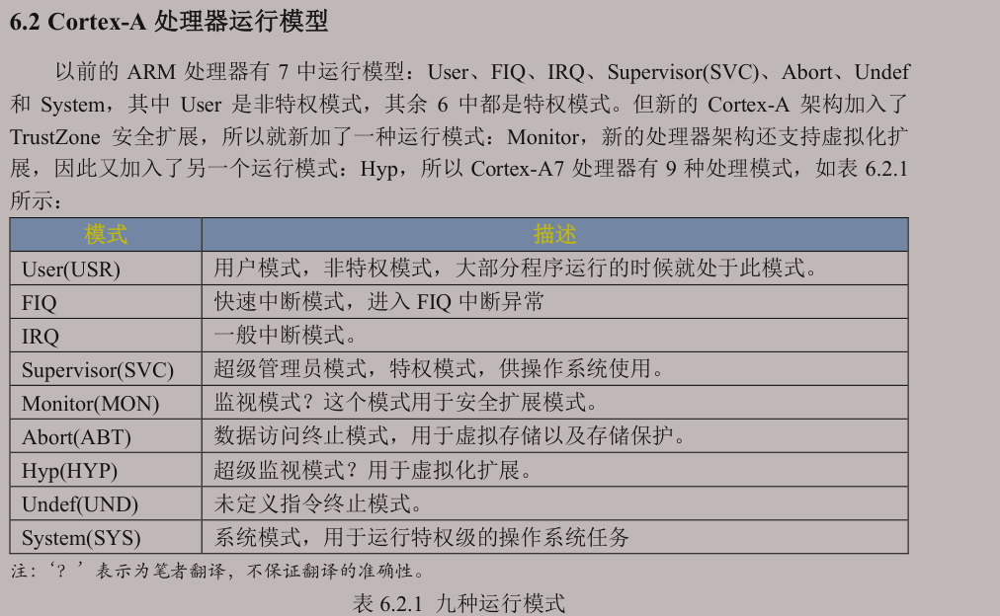
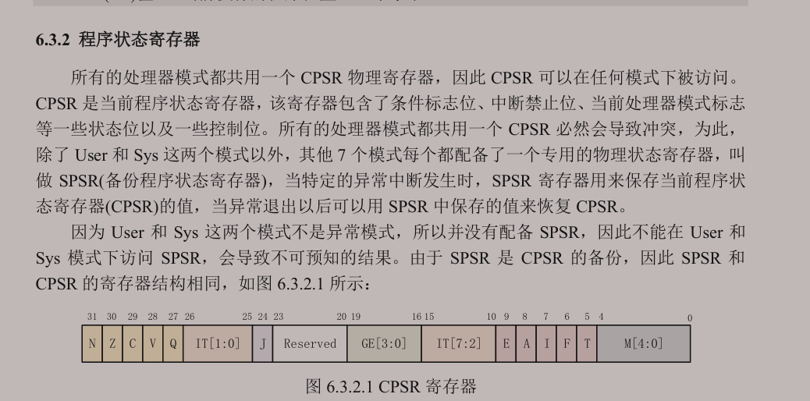
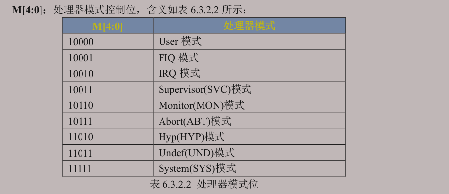
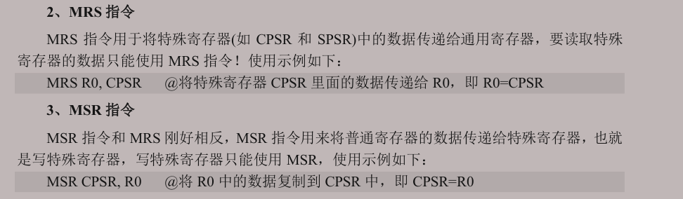

:::info
学习笔记记录，非教程。
:::
C语言运行环境搭建
前面我们讲解了如何用汇编语言编写 LED 灯实验，但是实际开发过程中汇编用的很少，大部分都是 C 语言开发，汇编只是用来完成 C 语言环境的初始化。本文我们就来学习如何用汇编来完成 C 语言环境的初始化工作，然后从汇编跳转到 C 语言代码里面去。
设置处理器模式
对于Cortex-A处理器，有多种运行模式，例如User模式、中断模式等。除用户（User）模式为非特权模式，其余均为特权模式，特权模式下程序可以访问所有系统资源，还有自己独有的寄存器组，而非特权模式下访问受限。

而现在我们需要将处理器模式设置为SVC模式。
这就需要了解到内核寄存器组中的CPSR寄存器，其低四位为处理器运行模式控制位。



设置CPSR寄存器的bit4-0，也就是M[4:0]为10011=0X13。读写状态寄存器需要用到 MRS[1] 和 MSR[2] 指令。MRS将CPSR寄存器数据读出到通用寄存器里面，MSR指令将通用寄存器的值写入到CPSR寄存器里面去。
为啥不用SDR、LDR？因为这他妈属于处理器内部自己在传输数据，而不是从寄存器与存储器！而且它只能操作通用寄存器。

设置sp寄存器
也就是栈的起始地址。
Sp可以指向内部RAM，也可以指向DDR，我们将其指向DDR。Sp设置到哪里？512MB的范围0x80000000~0x9FFFFFFF。栈大小，0x200000=2MB，很大大大大了。
再提一嘴，由于NXP给我们提供的SDK包里面有初始化DDR等一系列操作，所以这里我们可以方便的设置sp寄存器，其他处理器（启动方式设置为DDR的情况下）如果没有初始化DDR，还需要先初始化DDR。
这里再说一下栈的特性，有点抽象……
- 向上增长：即从低地址往高地址增长。以此判断即可。
- 向下增长：从高地址往低地址增长。
- 栈底：栈的起始位置。根据定义，如果是向下增长的，那么栈底为高地址。以此类推。
- 栈顶：程序运行时sp指针所指示的位置，不断变化。
处理器栈增长方式，对于A7而言是向下增长的。设置sp指向0x80200000。
跳转到C语言
使用b指令，跳转到C语言函数，比如main函数。
其实我们在stm32的启动文件中也可以看到这些操作，提一嘴……
实操
我的文件结构长这样：
project/
├── Makefile、lds
├── src/
│ └── main.c
├── inc/
│ └── main.h
├── build/
└── bin/同时为了学习makefile，makefile就写得比较复杂：
注意makefile文件对缩进、空格非常敏感！
# 设置目录变量，方便统一管理和修改
# 源代码目录:
SRC_DIR := src
# 头文件目录:
INC_DIR := inc
# 中间目标文件（.o）输出目录:
BUILD_DIR := build
# 最终生成的二进制文件（.bin）目录:
BIN_DIR := bin
# 设置编译工具（使用 ARM 的交叉编译工具链）
# 编译器（用于 .c 和 .S 文件）:
CC = arm-none-eabi-gcc
# 链接器:
LD = arm-none-eabi-ld
# 用于将 elf 转为 bin 格式:
OBJCOPY = arm-none-eabi-objcopy
# 编译选项（GCC 编译阶段）
# -I：指定头文件搜索目录
# -Wall：打开所有警告
# -nostdlib：不链接标准库（适用于裸机）
# -c：只编译，不链接
GCC_FLAGS = -I$(INC_DIR) -Wall -nostdlib -c
# 链接器选项
# -Ttext=0x80000000：设置代码段的起始地址（你设备上运行程序的入口地址）
# -e _start：显式设置程序入口点（防止链接器猜测）
LD_FLAGS = -Timx.lds
# 自动查找 src/ 目录下的所有 .c 文件
SRCS = $(wildcard $(SRC_DIR)/*.c)
# 将 src/xxx.c 转换为 build/xxx.o
# 例如：src/main.c → build/main.o
# 同时添加 build/startup.o（汇编启动文件）
# 这里注意是按顺序链接的，所以startup一定要在第一个否则链接到的地址不对（查看反汇编可知）
OBJS = $(BUILD_DIR)/startup.o
OBJS += $(patsubst $(SRC_DIR)/%.c,$(BUILD_DIR)/%.o,$(SRCS))
# 目标：生成最终的二进制文件 bin/ledc.bin
$(BIN_DIR)/ledc.bin: $(OBJS)
# 链接所有 .o 文件生成 elf 格式可执行文件
$(LD) $(LD_FLAGS) $(OBJS) -o $(BUILD_DIR)/ledc.elf
# 反汇编 调试用
arm-none-eabi-objdump -D -m arm $(BUILD_DIR)/ledc.elf > $(BUILD_DIR)/ledc.dis
# 把 elf 文件转换为裸机二进制文件（无符号、无头信息）
$(OBJCOPY) -O binary -S $(BUILD_DIR)/ledc.elf $@
# 编译汇编启动文件 startup.S，生成 build/startup.o
$(BUILD_DIR)/startup.o: startup.S
# 注意 startup.S 是汇编文件，用 gcc 编译也可以，默认会调用汇编器
$(CC) $(GCC_FLAGS) $< -o $@
# 编译每个 .c 文件到 build/xxx.o
# $@：目标文件（例如 build/main.o）
# $<：依赖的源文件（例如 src/main.c）
$(BUILD_DIR)/%.o: $(SRC_DIR)/%.c
$(CC) $(GCC_FLAGS) $< -o $@
.PHONY: clean
clean:
rm $(BUILD_DIR)/*.o $(BUILD_DIR)/*.elf $(BIN_DIR)/*.bin $(BUILD_DIR)/*.dismain.c
#include "main.h"
void clk_enable(void){
LED_CLK_REG = 0xffffffff;
}
void led_init(void){
LED_MUX_REG = 0x5; //复用为GPIO1_IO4
LED_PAD_REG = 0x10b0; //设置电气属性
LED_GPIO_DIR_REG = 0x10; //io4设置为输出
}
int main(void){
clk_enable();
led_init();
LED_GPIO_DATA_REG = 0x0; //输出为低电平
while(1);
return 0;
}main.h
#ifndef __MAIN_H_
#define __MAIN_H_
#define LED_CLK_REG *((volatile unsigned int*)0x020c406c)
#define LED_MUX_REG *((volatile unsigned int*)0x020e006c)
#define LED_PAD_REG *((volatile unsigned int*)0x020e02f8)
#define LED_GPIO_DIR_REG *((volatile unsigned int*)0x0209c004)
#define LED_GPIO_DATA_REG *((volatile unsigned int*)0x0209c000)
#endifstartup.S
.global _start
_start:
@ /* 1.设置处理器模式为SVC模式(其实CotexA内核上电默认即为SVC模式故不需要写) */
@ mrs r0, cpsr /* 读取cpsr到r0 */
@ bic r0, r0, #0x1f /* bic bit-clear位清零 */
@ /* 等同于R0 = R0 & (~Operand2) 这个操作数2自己推算*/
@ /* 现在这个操作相当于将r0的前5位清零了 */
@ orr r0, r0, #0x13 /* orr 按位或 */
@ msr cpsr, r0 /* 写入cpsr */
@下面这段是重置CP15寄存器的一些位，好像加了更保险一些。目前还没弄明白，但是实测不需要也可以运行。
@ mrc p15, 0, r0, c1, c0, 0 /*读取CP15系统控制寄存器 */
@ bic r0, r0, #0x1000 /* 清除第12位（I位）禁用 I Cache */
@ bic r0, r0, #0x4 /* 清除第 2位（C位）禁用 D Cache */
@ bic r0, r0, #0x2 /* 清除第 1位（A位）禁止严格对齐 */
@ bic r0, r0, #0x800 /* 清除第11位（Z位）分支预测 */
@ bic r0, r0, #0x1 /* 清除第 0位（M位）禁用 MMU */
@ mcr p15, 0, r0, c1, c0, 0 /* 将修改后的值写回CP15寄存器 */
/* 2.设置sp寄存器 */
ldr sp, =0x80100000 /* 栈大小1M */
/* 3.跳转到main函数 */
b main
loop:
b loop链接脚本：
ENTRY(_start)
SECTIONS {
. = 0x80000000;
. = ALIGN(4);
.text :
{
build/startup.o
*(.text)
}
. = ALIGN(4);
.rodata :
{
*(.rodata*)
}
. = ALIGN(4);
.data :
{
*(.data)
}
. = ALIGN(4);
__bss_start = .;
.bss :
{
*(.bss)
*(COMMON)
}
__bss_end = .;
}